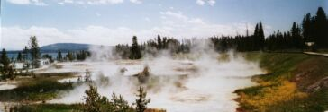
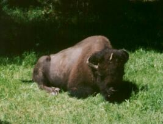
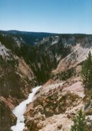
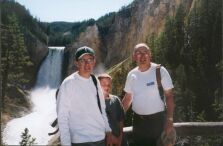
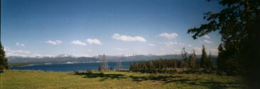
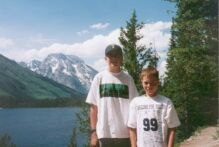
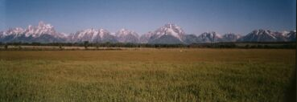
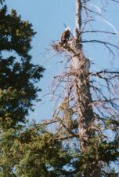
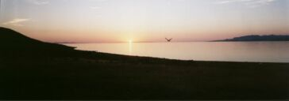

Home : National Park Trip : Week 2
We slept in, then had a bacon and pancake breakfast. After cleaning up and loading all the food and utensils in the car (bear precautions), we set off. Our first stop was the visitor center where we got fishing permits. Then we saw the West Thumb Geyser Basin. Lots of beautiful thermal pools, fumeroles, etc... We headed north to the Old Faithful area. We saw Old Faithful erupt--it may be faithful but wasn’t very impressive, at least not the eruption we saw. Just down the road was Bisquit Basin, We parked there, ate lunch, then Tommy, Mark and I went fishing in the Little Firehole River. We didn’t have any luck. On the  way back, we stopped at a small creek near the Continental Divide. Mark caught some tiny brookies. We were all devoured by mosquitos.
We finally saw a bison in our travels, plus we saw two marmots near  Old Faithful. We had nice hot showers when we got back, at $3.00 each. I said they should have naked female attendants for that price. We had chicken tacos for dinner and a campfire and went to bed. It was getting cold, below 50 degrees at bedtime. All in all, a great day at Yellowstone.
BRRR cold when we went to bed, colder when we got up, about 40°. Heating the coffee water and hot cereal water heated up the camper a bit and the sun is warm and bright. Another beautiful day, crystal clear and comfortable. We headed north after a leisurely breakfast, clean and trip to the store up past Old Faithful. The guys went fishing in a river, Gibbon’s River. Jim caught a brookie and let a bigger one go. All three  were having fun. I enjoyed sitting, watching and reading. We headed up to Canyonland, the Grand Canyon of the Yellowstone. It was beautiful! Many scenic overlooks along the way, impressive waterfalls. I did one of the walks down to the top of the lower falls. We saw many bison, osprey, a bald eagle and a sleeping grizzly. It was nothing to write home about,  (a pile of fur in a gully with rangers and tourists galore) but we can say we saw one.
Fished again in Yellowstone Lake and got back about 8:30 PM. Had dinner at the Grill, sandwiches and fries, back to our cold campsite and to bed. Still a lot of people but the campground is not full and each scenic area has people but not crazy.. It’s fun.
I woke up around 8:45 AM. I stayed in bed another 15 minutes. I went to the bathroom and then ate breakfast. Mom was doing laundry while we ate. When Mom got home we went to the canyons, it was beautiful. We went to a lot of look out spots. We saw an osprey with a fish in it’s mouth. We took a hike to the bottom after a while it got boring. Then we went fishing. I waded. The water was awesome. Dad fished for a while while we  waited for a geyser to erupt. It didn’t so Mom and I got Dad while Tommy stayed to watch, then we picked up Dad and went back to watch. We gave up. We got home, ate homemade soup. We gave some to our neighbors. Then we played frisbee with some other kids then went to bed.
We were up fairly early today. Mom and Dad were up before us and packed all of the food into the camper. We were up at 8:45 and out of  the site by 10:00 AM. We stayed on the road for about half hour before reaching Grand Teton National Park. The Grand Tetons are huge and majestic. We checked into our campsite in time for lunch. We had electricity! In the afternoon we went to Jackson. Here we got old time photos taken, souveniers and watched an old west shootout. I really  liked the town and the surrounding hills and mountains. We had pizza at a brew pub and stopped at a cyber café to check our e-mail. When we got back Mark and I went into the hot tub. This felt good and we had a good view of the mountains. During the night we all froze with below freezing temperatures.
We got up early, ate breakfast and packed up to leave. We left the campground at 7:30 AM, in time to meet our Snake River float trip at  8:00 AM. We floated downt he river through the park for a couple of hours (10 miles). We enjoyed the view, listed to the guide, saw some wildlife (bald eagles, bison, elk in the distance) and visited with the other families in the raft- one from South Texas with a son going into 9th grade, and one from Exeter, NH with twin girls Mark’s age and a 4 or 5 year old boy.
After the trip we left for Salt Lake City. We had a slow trip over Teton Pass, then followed the Snake River to Idaho Falls. We had a great  lunch (french dip, soup, etc) at Pizza Plus in Idaho Falls. While heading south on I 15 we read about Antelope Island State Park as a place to swim in the Great Salt Lake. It turned out they had camping too. We stopped and drove out across a causeway to this big island. We had a site overlooking the lake with almost on one else around. We all floated and swam in the lake, then showered, ate dinner and settled down in our quietest place yet.
We took our time packing up, drove up to a high point on the island and to the visitors center. Had French Toast and bacon at camp before we left. Not bad for no utilities. It was a hazy day. I drove through Salt Lake City. We decided not to stop, just to head south. The city looked smaller than Boston, not as many big skyscrapers. We drove about 400 miles through valleys in the mountains. The Utah information man was very nice (oops, that was yesterday). Dry desert like land, sage and a tumbleweed, feels like we’re in the desert. We arrived at Bryce-Zion KOA in Glendale about 6 PM. Beautiful cliffs with spires behind the campground. Mark met 4 girls. We had BBQ chicken for dinner. It’s warmer than Yellowstone but not humid or overly hot or desert like.
We got up fairly early. We ate a good warm breakfast. We went to Bryce. It was beautiful. After a while it got boring because we stopped too often. We went down a trail. It was called Queen Victoria’s Garden. At the end of it we ate lunch. A chipmunk was there, it was so cute. When we were going home there was a hail storm. It was sweet. We got home and ate then we played spades. I went over to some girls place and then came home and went to bed.
{kind=link}
{kind=link}
{kind=link}
{kind=link}
{kind=link}
{kind=link}
{kind=link}
{kind=link}
{kind=link}